1 Model definition
Referring to the models used in the articles Hui (2016), we define the following model :
\[ \mathrm{log}(\theta_{ij}) =\alpha_i + \beta_{0j}+X_i.\beta_j+ W_i.\lambda_j \]
Link function logarithm : \(\mathrm{log}: p \rightarrow \log(p)\).
Response variable: \(Y=(y_{ij})^{i=1,\ldots,nsite}_{j=1,\ldots,nsp}\) with:
\[y_{ij} \sim \mathcal{P}oisson(\theta_{ij})\].
\[y_{ij}=\begin{cases} 0 & \text{if species $j$ has been observed as absent at site $i$}\\ n & \text{if $n$ individuals of the species $j$ have been observed at the site $i$}. \end{cases}\]
Latent variables: \(W_i=(W_i^1,\ldots,W_i^q)\) where \(q\) is the number of latent variables considered, which has to be fixed by the user (by default \(q=2\)). We assume that \(W_i \sim \mathcal{N}(0,I_q)\) and we define the associated coefficients: \(\lambda_j=(\lambda_j^1,\ldots, \lambda_j^q)'\). We use a prior distribution \(\mathcal{N}(0,10)\) for all lambdas not concerned by constraints to \(0\) on upper diagonal and to strictly positive values on diagonal.
Explanatory variables: bioclimatic data about each site. \(X=(X_i)_{i=1,\ldots,nsite}\) with \(X_i=(x_i^1,\ldots,x_i^p)\in \mathbb{R}^p\) where \(p\) is the number of bioclimatic variables considered. The corresponding regression coefficients for each species \(j\) are noted : \(\beta_j=(\beta_j^1,\ldots,\beta_j^p)'\).
\(\beta_{0j}\) correspond to the intercept for species \(j\) which is assume to be a fixed effect. We use a prior distribution \(\mathcal{N}(0,10)\) for all betas.
\(\alpha_i\) represents the random effect of site \(i\) such as \(\alpha_i \sim \mathcal{N}(0,V_{\alpha})\) and we assumed that \(V_{\alpha} \sim \mathcal {IG}(\text{shape}=0.5, \text{rate}=0.005)\) as prior distribution by default.
2 Abundance data-set
Figure 2.1: Oribatid mites (Borcard & Legendre 1994).
This data-set is available in the jSDM-package. It can be loaded with the data() command. The mites data-set is in “wide” format: each line is a site and the abundance data are in columns.
This example data set is composed of 70 cores of mostly Sphagnum mosses collected on the territory of the Station de biologie des Laurentides of Université de Montréal, Québec, Canada in June 1989.
The whole sampling area was 2.5 m x 10 m in size and thirty-five taxa were recognized as species, though many were not given a species name, owing to the incomplete stage of systematic knowledge of the North American Oribatid fauna.
The data set comprises the abundances of 35 morphospecies, 5 substrate and micritopographic variables, and the x-y Cartesian coordinates of the 70 sampling sites.
See Borcard et al. (1992, 1994) for details.
library(jSDM)
#> ##
#> ## jSDM R package
#> ## For joint species distribution models
#> ## https://ecology.ghislainv.fr/jSDM
#> ##
# mites data
data(mites, package="jSDM")
head(mites)
#> Brachy PHTH HPAV RARD SSTR Protopl MEGR MPRO TVIE HMIN HMIN2 NPRA TVEL ONOV
#> 1 17 5 5 3 2 1 4 2 2 1 4 1 17 4
#> 2 2 7 16 0 6 0 4 2 0 0 1 3 21 27
#> 3 4 3 1 1 2 0 3 0 0 0 6 3 20 17
#> 4 23 7 10 2 2 0 4 0 1 2 10 0 18 47
#> 5 5 8 13 9 0 13 0 0 0 3 14 3 32 43
#> 6 19 7 5 9 3 2 3 0 0 20 16 2 13 38
#> SUCT LCIL Oribatul1 Ceratoz1 PWIL Galumna1 Steganacarus2 HRUF Trhypochth1
#> 1 9 50 3 1 1 8 0 0 0
#> 2 12 138 6 0 1 3 9 1 1
#> 3 10 89 3 0 2 1 8 0 3
#> 4 17 108 10 1 0 1 2 1 2
#> 5 27 5 1 0 5 2 1 0 1
#> 6 39 3 5 0 1 1 8 0 4
#> PPEL NCOR SLAT FSET Lepidozetes Eupelops Minigalumna LRUG PLAG2 Ceratoz3
#> 1 0 0 0 0 0 0 0 0 0 0
#> 2 1 2 2 2 1 0 0 0 0 0
#> 3 0 2 0 8 0 0 0 0 0 0
#> 4 1 3 2 12 0 0 0 0 0 0
#> 5 0 0 0 12 2 0 0 0 0 0
#> 6 0 1 0 10 0 0 0 0 0 0
#> Oppia.minus Trimalaco2 substrate shrubs topo density water x y
#> 1 0 0 sph1 few hummock 39.179 350.148 0.2 0.1
#> 2 0 0 litter few hummock 54.989 434.815 1.0 0.1
#> 3 0 0 inter few hummock 46.069 371.720 1.2 0.3
#> 4 0 0 sph1 few hummock 48.187 360.501 1.4 0.5
#> 5 0 0 sph1 few hummock 23.551 204.126 2.4 0.7
#> 6 0 0 sph1 few hummock 57.318 311.551 1.8 0.9We rearrange the data in two data-sets: a first one for the abundance observations for each species (columns) at each site (rows), and a second one for the site characteristics.
We also normalize the continuous explanatory variables to facilitate MCMC convergence.
# data.obs
PA_mites <- mites[,1:35]
# Remove species with less than 10 presences
rare_sp <- which(apply(PA_mites >0, 2, sum) < 10)
PA_mites <- PA_mites[, -rare_sp]
# Normalized continuous variables
Env_mites <- cbind(scale(mites[,c("density","water")]), mites[,c("substrate", "shrubs", "topo")])
str(Env_mites)
#> 'data.frame': 70 obs. of 5 variables:
#> $ density : num -0.00872 1.315 0.56816 0.74549 -1.3172 ...
#> $ water : num -0.425 0.17 -0.273 -0.352 -1.451 ...
#> $ substrate: Factor w/ 7 levels "inter","litter",..: 4 2 1 4 4 4 4 1 2 4 ...
#> $ shrubs : Factor w/ 3 levels "few","many","none": 1 1 1 1 1 1 1 2 2 2 ...
#> $ topo : Factor w/ 2 levels "blanket","hummock": 2 2 2 2 2 2 2 1 1 2 ...3 Parameter inference
We use the jSDM_poisson_log() function to fit the JSDM (increase the number of iterations to achieve convergence).
mod_mites_jSDM_log <- jSDM_poisson_log(
# Chains
burnin=1000, mcmc=1000, thin=1,
# Response variable
count_data=PA_mites,
# Explanatory variables
site_formula = ~.,
site_data = Env_mites,
# Model specification
n_latent=2, site_effect="random",
# Starting values
alpha_start=0, beta_start=0,
lambda_start=0, W_start=0,
V_alpha=1,
# Priors
shape_Valpha=0.5,
rate_Valpha=0.0005,
mu_beta=0, V_beta=10,
mu_lambda=0, V_lambda=10,
# Various
ropt=0.44,
seed=1234, verbose=1)
#>
#> Running the Gibbs sampler. It may be long, please keep cool :)
#>
#> **********:10.0%, mean accept. rates= beta:0.381 lambda:0.215 W:0.255 alpha:0.197
#> **********:20.0%, mean accept. rates= beta:0.417 lambda:0.348 W:0.358 alpha:0.364
#> **********:30.0%, mean accept. rates= beta:0.440 lambda:0.415 W:0.431 alpha:0.432
#> **********:40.0%, mean accept. rates= beta:0.439 lambda:0.444 W:0.448 alpha:0.437
#> **********:50.0%, mean accept. rates= beta:0.443 lambda:0.437 W:0.452 alpha:0.429
#> **********:60.0%, mean accept. rates= beta:0.447 lambda:0.448 W:0.492 alpha:0.452
#> **********:70.0%, mean accept. rates= beta:0.446 lambda:0.432 W:0.489 alpha:0.442
#> **********:80.0%, mean accept. rates= beta:0.448 lambda:0.434 W:0.496 alpha:0.443
#> **********:90.0%, mean accept. rates= beta:0.450 lambda:0.428 W:0.481 alpha:0.441
#> **********:100.0%, mean accept. rates= beta:0.444 lambda:0.430 W:0.478 alpha:0.4564 Analysis of the results
np <- nrow(mod_mites_jSDM_log$model_spec$beta_start)
## beta_j of the first species
par(mfrow=c(3,2))
for (p in 1:np) {
coda::traceplot(coda::as.mcmc(mod_mites_jSDM_log$mcmc.sp[[1]][,p]))
coda::densplot(coda::as.mcmc(mod_mites_jSDM_log$mcmc.sp[[1]][,p]),
main = paste(colnames(mod_mites_jSDM_log$mcmc.sp[[1]])[p],
", species : ",1))
}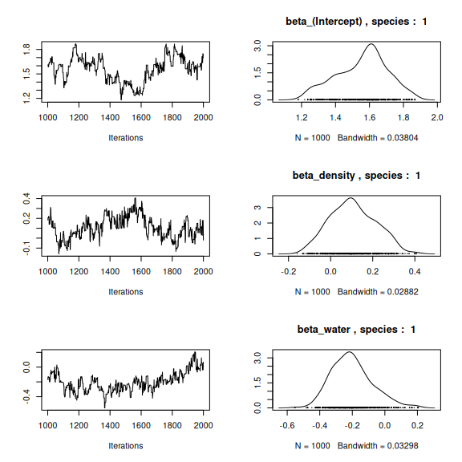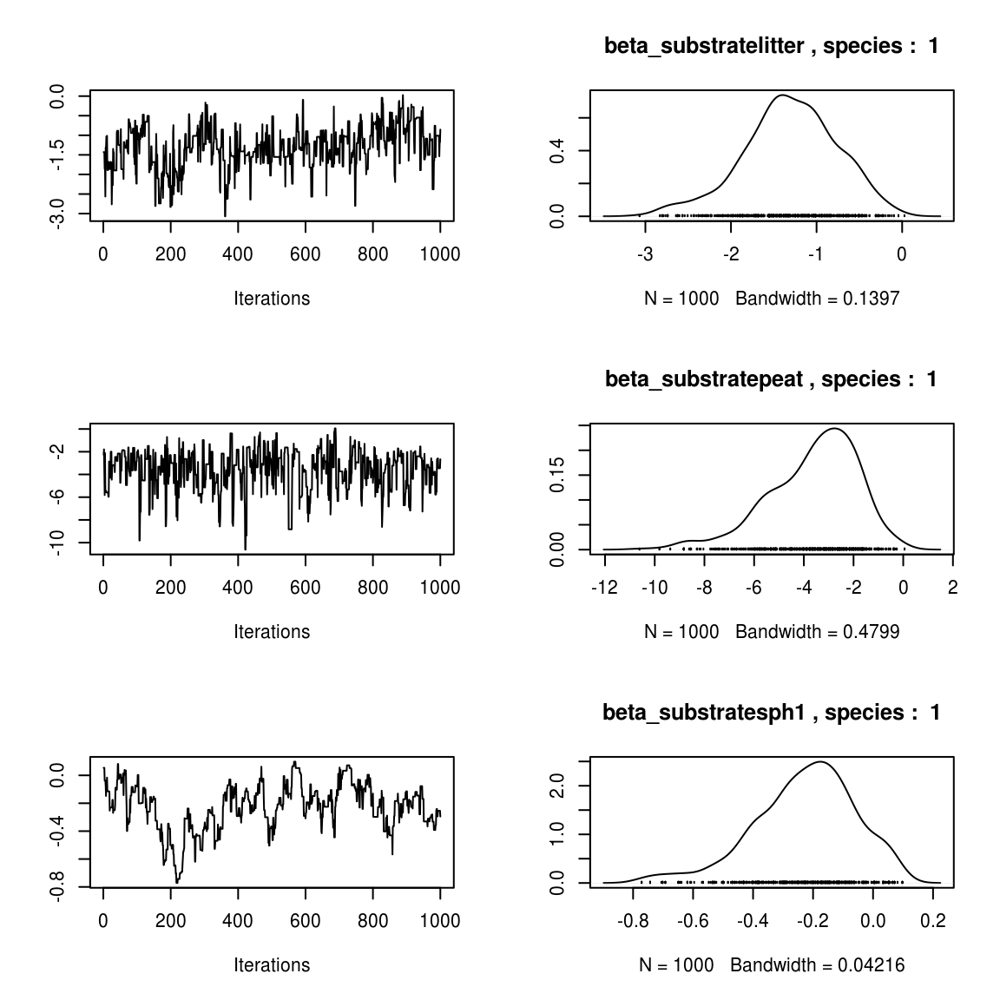 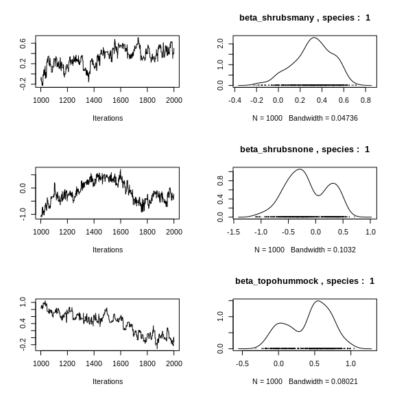
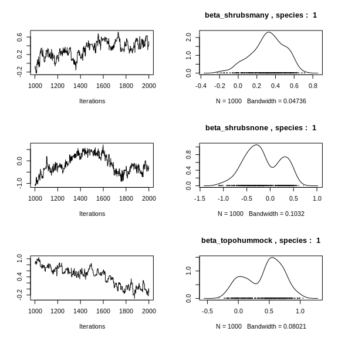
## lambda_j of the first two species
n_latent <- mod_mites_jSDM_log$model_spec$n_latent
par(mfrow=c(2,2))
for (j in 1:2) {
for (l in 1:n_latent) {
coda::traceplot(mod_mites_jSDM_log$mcmc.sp[[j]][,np+l])
coda::densplot(mod_mites_jSDM_log$mcmc.sp[[j]][,np+l],
main = paste(colnames(mod_mites_jSDM_log$mcmc.sp[[j]])
[np+l], ", species : ",j))
}
}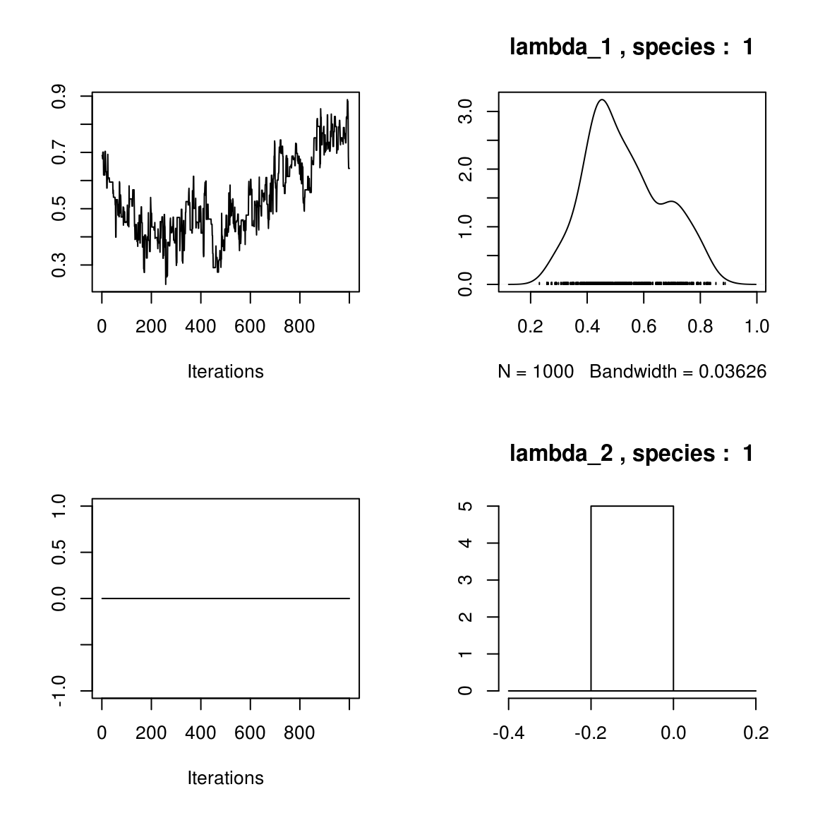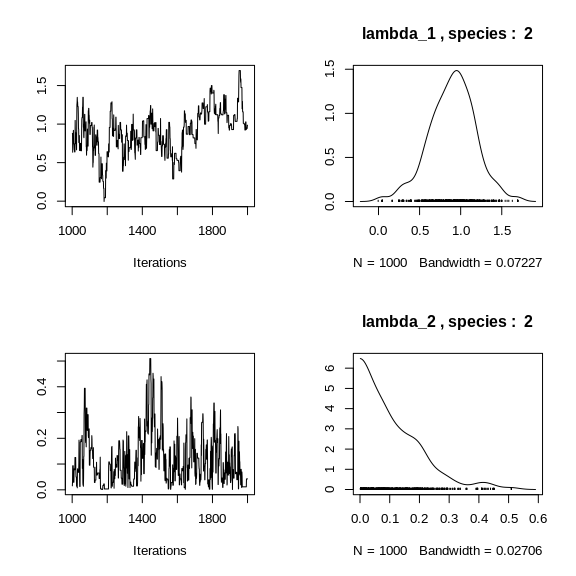
## Latent variables W_i for the first two sites
par(mfrow=c(2,2))
for (l in 1:n_latent) {
for (i in 1:2) {
coda::traceplot(mod_mites_jSDM_log$mcmc.latent[[paste0("lv_",l)]][,i],
main = paste0("Latent variable W_", l, ", site ", i))
coda::densplot(mod_mites_jSDM_log$mcmc.latent[[paste0("lv_",l)]][,i],
main = paste0("Latent variable W_", l, ", site ", i))
}
}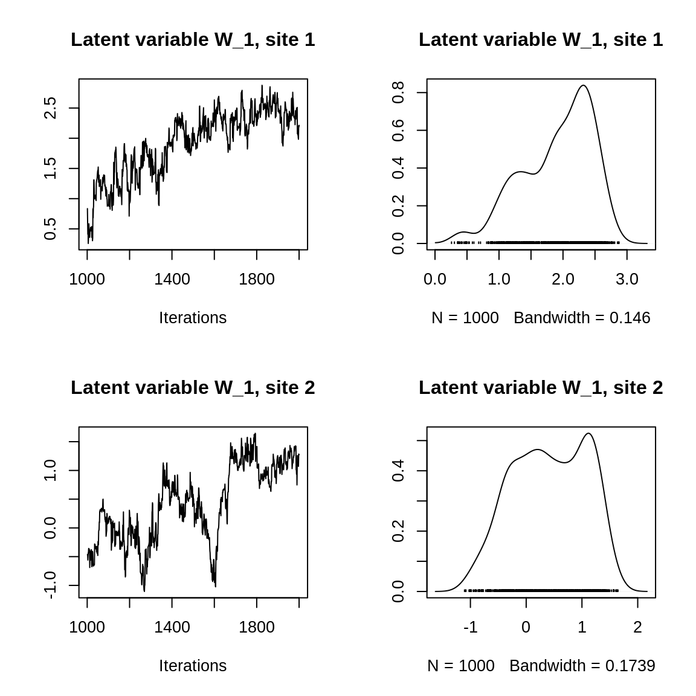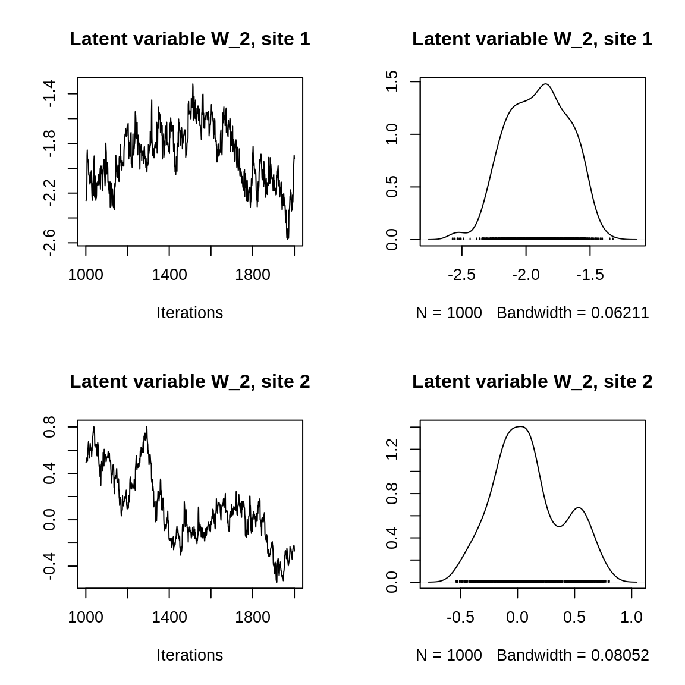
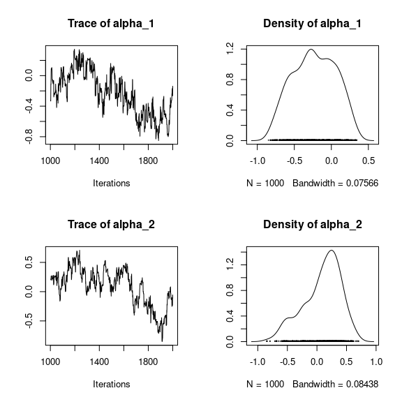
## V_alpha
par(mfrow=c(2,2))
coda::traceplot(mod_mites_jSDM_log$mcmc.V_alpha)
coda::densplot(mod_mites_jSDM_log$mcmc.V_alpha)
## Deviance
coda::traceplot(mod_mites_jSDM_log$mcmc.Deviance)
coda::densplot(mod_mites_jSDM_log$mcmc.Deviance)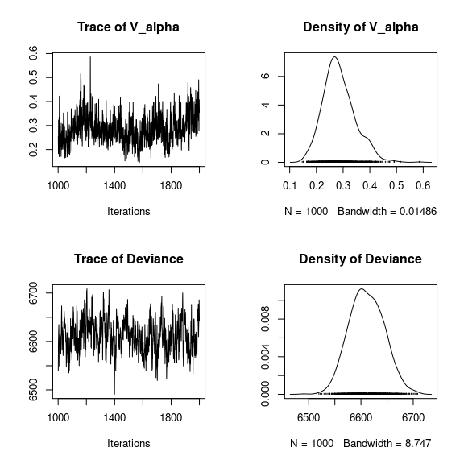
## probit_theta
par (mfrow=c(2,1))
hist(mod_mites_jSDM_log$log_theta_latent, main = "Predicted log theta", xlab ="predicted log theta")
hist(mod_mites_jSDM_log$theta_latent, main = "Predicted theta", xlab ="predicted theta")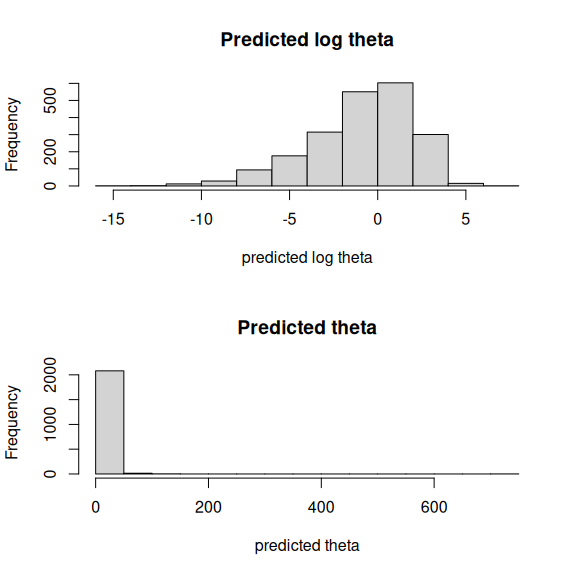
5 Matrice of correlations
After fitting the jSDM with latent variables, the full species residual correlation matrix \(R=(R_{ij})^{i=1,\ldots, nspecies}_{j=1,\ldots, nspecies}\) can bederived from the covariance in the latent variables such as : \[\Sigma_{ij} = \lambda_i^T .\lambda_j \], then we compute correlations from covariances : \[R_{i,j} = \frac{\Sigma_{ij}}{\sqrt{\Sigma _{ii}\Sigma _{jj}}}\].
We use the function plot_residual_cor() to compute and display the residual correlation matrix between species :
plot_residual_cor(mod_mites_jSDM_log, tl.cex=0.5)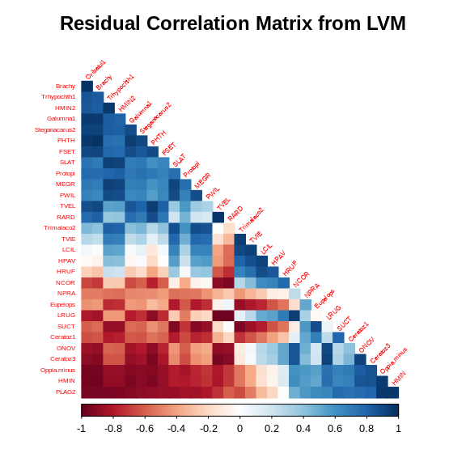
6 Predictions
We use the predict.jSDM() S3 method on the mod_mites_jSDM_log object of class jSDM to compute the mean (or expectation) of the posterior distributions obtained and get the expected values of model’s parameters.
# Sites and species concerned by predictions :
## 35 sites among the 70
Id_sites <- sample.int(nrow(PA_mites), 35)
## 20 species among the 30
Id_species <- sample(colnames(PA_mites),20)
# Simulate new observations of covariates on those sites
simdata <- matrix(nrow=35, ncol = ncol(mod_mites_jSDM_log$model_spec$site_data))
colnames(simdata) <- colnames(mod_mites_jSDM_log$model_spec$site_data)
rownames(simdata) <- Id_sites
simdata <- as.data.frame(simdata)
simdata$density <- rnorm(35)
simdata$water <- rnorm(35)
simdata$substrate <- sample(c("inter", "litter", "peat", "sph1", "sph2", "sph3", "sph4"), 35, replace=T)
simdata$shrubs <- sample(c("none","many", "few"), 35, replace=T)
simdata$topo <- sample(c("blanket","hummock"), 35, replace=T)
# Predictions
theta_pred <- predict(mod_mites_jSDM_log, newdata=simdata, Id_species=Id_species,
Id_sites=Id_sites, type="mean")
hist(theta_pred, main="Predicted theta with simulated data", xlab="predicted theta")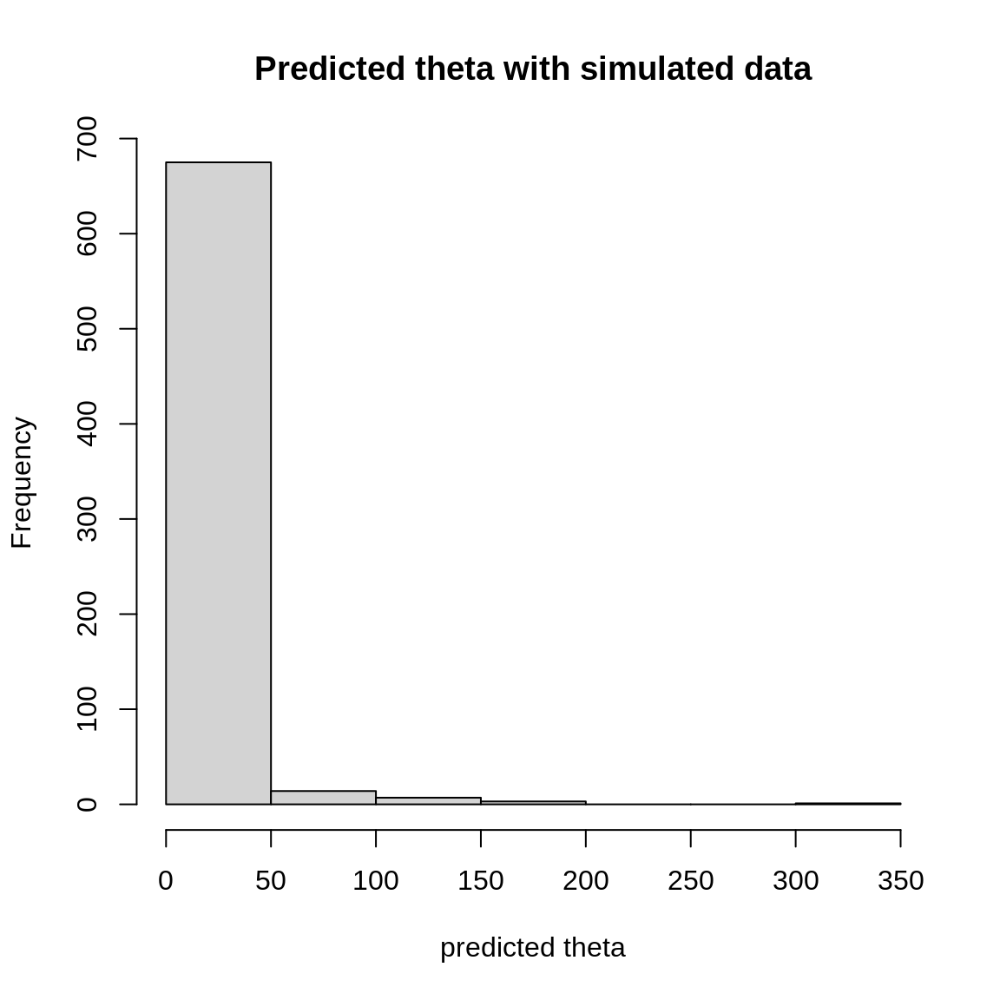